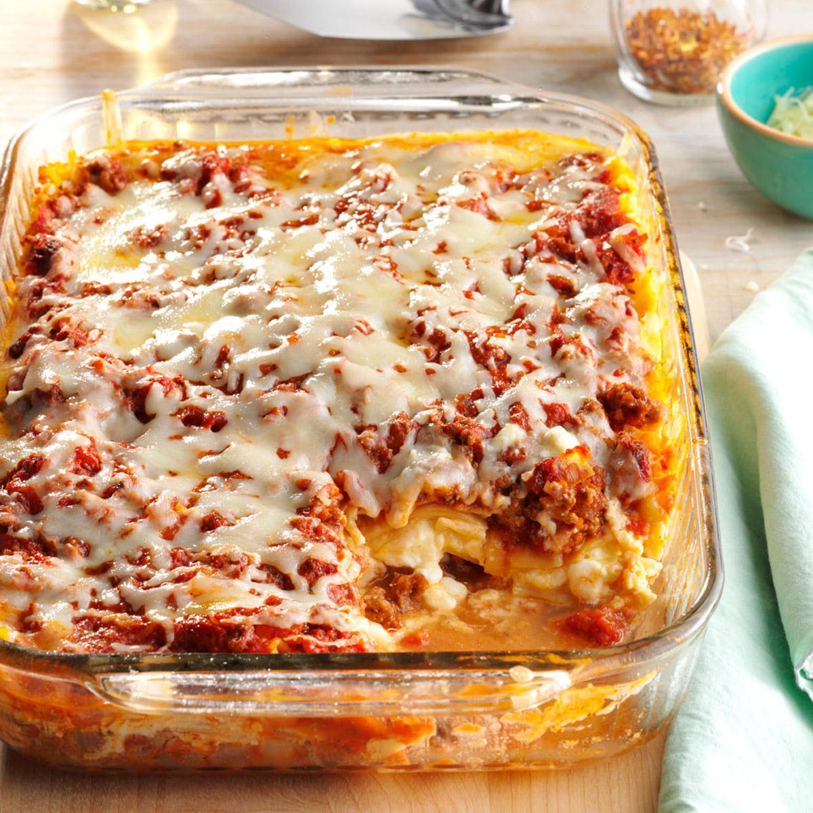

Four Cheese Lasagna

Ingredients
- 1lb lasagna noodles; cooked and drained
- 2 eggs
- 1lb ground beef
- 1 medium onion, chopped
- 2 garlic cloves, minced
- 1 can(28oz) tomatoes, undrained
- 1 can(8oz) sliced mushrooms, drained
- 1 can(6oz) tomato paste
- 2 cups 4% cottage cheese
- 2/3 cup grated parmesan cheese
- 1/4 cup shredded mild cheddar cheese
- 1 1/2 cups shredded mozzarella cheese
- 1 teaspoon salt
- 1 teaspoon dried oregano
- 1 teaspoon dried basil
- 1/2 teaspoon pepper
- 1/2 teaspoon fennel seed
Instructions
- preheat oven to 350 degrees
- in a skillet, cook the beef, onion and garlic over medium heat until beef is no longer pink and onion is tender; drain
- in a blender, process the tomatoes until smooth; stir into beef mixture along with mushrooms, tomato paste and seasonings, simmer 15 minutes
- in a bowl, combine cottage cheese, Parmesan, cheddar, 1/2 cup mozzarella and eggs
- spread 2 cups meat sauce in the bottom of an ungreased 9x13 baking dish
- arrange half the noodles over sauce, spread cheese mixture over noodles
- top with remaining noodles and sauce
- cover with foil and bake at 350° for 45 minutes
- uncover; sprinkle with remaining mozzarella, return to the oven for 15 minutes or until cheese is melted